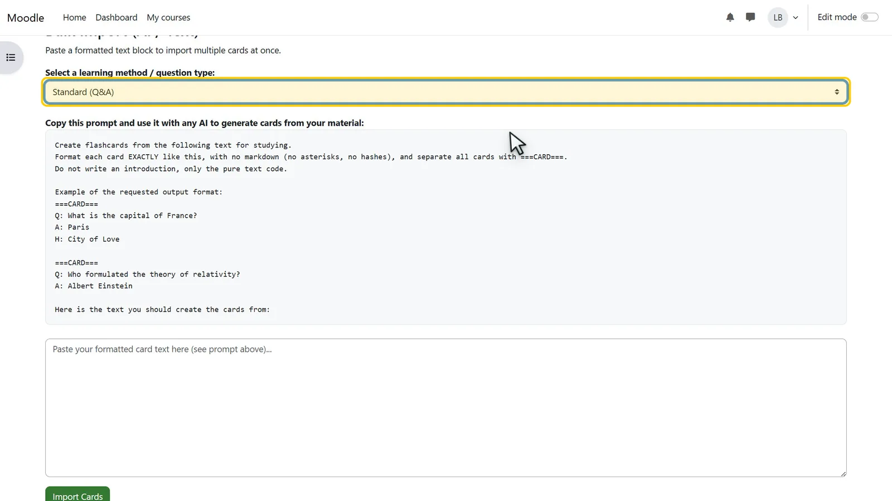
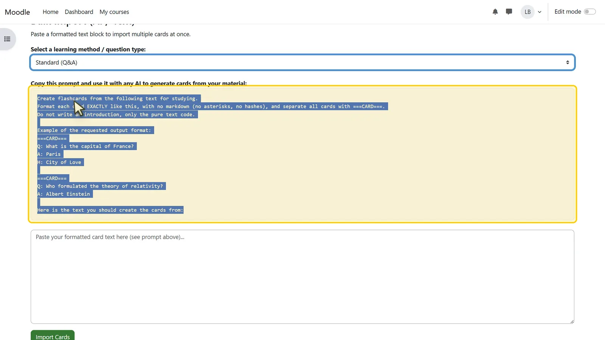
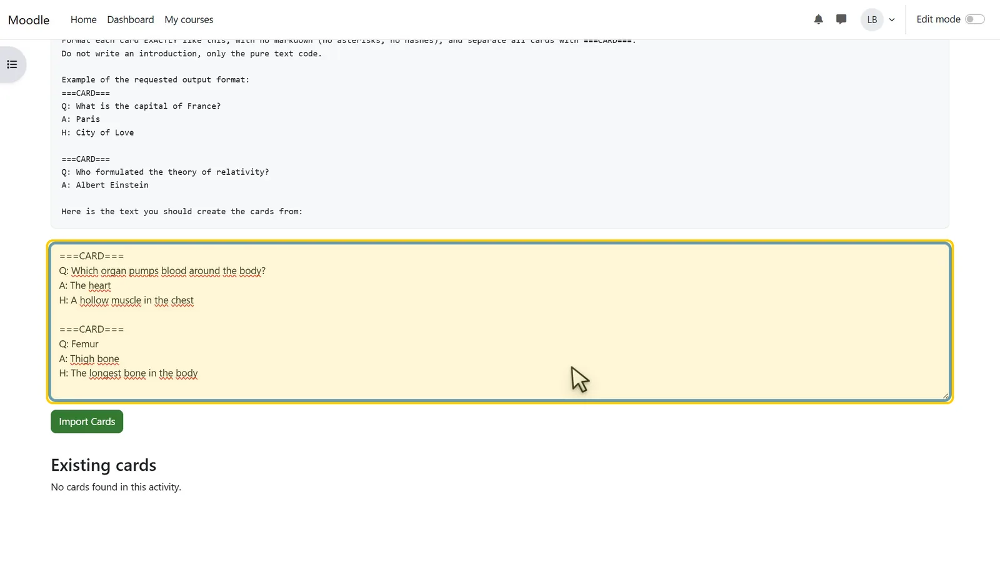
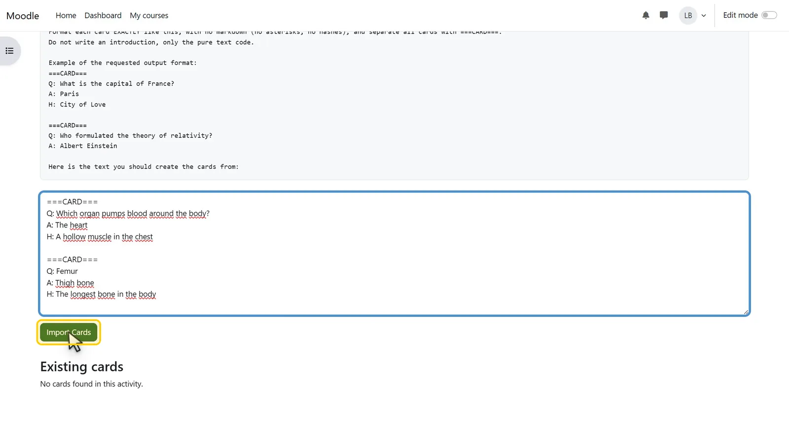
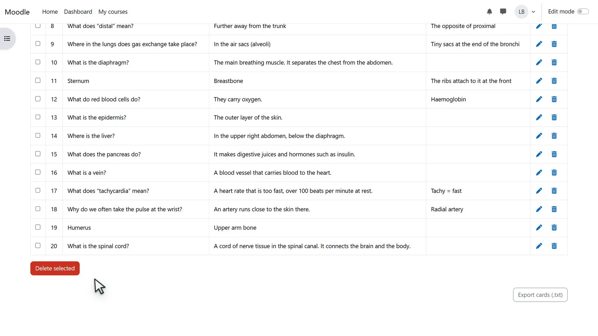

How to create Moodle flashcards with AI
Moodle itself has no flashcard activity. With LeitBox you don't type cards one by one: LeitBox gives you a ready-made prompt for six question types. You give the prompt and your notes to an AI assistant of your choice and paste its answer back into LeitBox. All cards are created in one go.
Updated 6 November 2026
What you need
- Moodle 4.1 to 5.1 with LeitBox installed by an administrator (download from GitHub)
- Editing rights in the course, for example as a teacher, and a LeitBox activity
- Your teaching text, for example a script or a chapter, and access to an AI assistant (any chat AI)
Step by step
-

Step 1 of 5Choose a question type
Open the LeitBox activity and the Manage Cards tab. Under Bulk Import (AI / Text), choose a type in Select a learning method / question type, for example Standard (Q&A). The matching prompt appears below.
-

Step 2 of 5Copy the prompt
Select the whole prompt and copy it. Paste it into your AI assistant and add your text at the end, where the prompt says so.
-

Step 3 of 5Paste the AI's answer
The AI answers with cards in a fixed format:
===CARD===, thenQ:for the question,A:for the answer and an optionalH:for a hint. Copy the whole answer into the text field. -

Step 4 of 5Import the cards
Click Import Cards. LeitBox creates every card from the text. You need no file and no spreadsheet.
-

Step 5 of 5Check the cards
The new cards appear in the table below. Each card can be edited or deleted. For variety, import a second question type into the same activity, for example fill-in-the-blank cards.
Good to know
Check what the AI wrote
An AI can get facts wrong. Read the cards before learners use them; every card stays editable.
Up to 200 cards
An activity holds up to 200 cards. For larger topics, split the material into several LeitBox activities, for example one per chapter.
Your data
LeitBox itself sends nothing to an AI. You decide which text you give to which AI assistant.